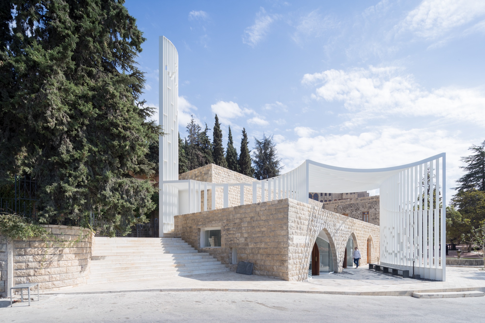

L.E.FT Architects
Architecture at the intersection of cultural and political production — where the specificity of a site is understood first as a social, political and economic context.
We work at the edge of where God built — treating Islamic architecture not as a closed chapter, but as a living field.
L.E.FT was founded in New York by Ziad Jamaleddine and Makram el Kadi. The practice is dedicated to examining the intersections of cultural and political productions as they relate to the built environment.
With an interest in diverse programs, a focus on unconventional interpretations of design is posited, redefining the relationship between the object and both its context and its users — from a social as well as an aesthetic perspective.
Practice and research run as one loop. Studios taught at Columbia, Yale, Cornell, PennDesign and the American University of Beirut feed the commissions; the commissions deepen the scholarship; the scholarship is exhibited at Oslo, Milan, Sharjah and Jeddah.
Five Arabic words
that organise the work
Canonical architectural language has frequently masked alternative forms of spatial practice. Rather than borrowing Western typologies, the office works from the ambiguity and depth of Arabic spatial terms — drawing on historical ritual and social structure without revivalism or imitation.
Recent work
Projects
Selected projects
Complete works
2001 — 2026
Built work, installations, competitions and speculative projects, listed together — in this practice they feed each other.
The practice
L.E.FT was founded in New York in 2004 by Ziad Jamaleddine and Makram el Kadi. The office was a member of Architectural Record's 2010 Design Vanguard for top firms in the United States, and was selected to the AD100, The Best Designers in the Middle East and North Africa (2025).
Profile
Established in New York, L.E.FT is dedicated to examining the intersections of cultural and political productions as they relate to the built environment.
Spatial qualities as well as programmatic typologies are understood in their importance and role within a specific social context. The specificity of a ‘Site’ is thus understood not only as a physical context within which one is designing, but primarily as a socio-political and economical context.
The office’s research and design work has been exhibited at Oslo Architecture Triennale (2016), Studio-X Istanbul (2017), Milan Triennale (2019), Sharjah Architecture Triennial (2019 and 2026) and the Jeddah Islamic Arts Biennale (2023).
Contact
United States
438 West 116th St, Suite 42
New York, NY 10027
T +1 917 783 8498
Lebanon
Spears Bldg, Phoenicia Street
Ground Floor, Beirut
T +961 1 37 33 51
Principals
Ziad Jamaleddine — B.Arch, American University of Beirut (Areen Award); M.Arch, Harvard GSD. Steven Holl Architects, 1999–2005, assistant project architect on Simmons Hall, MIT. Assistant Professor of Architecture and Urban Design at Columbia GSAPP, where he coordinates the Advanced IV sequence and is faculty of the Post-Conflict Cities Lab. Guest editor of Architectural Design 97.4, Arab Ground — Sacred, Secular, Shared.
Makram el Kadi — B.Arch, American University of Beirut; M.Arch, Parsons. Fumihiko Maki, Tokyo; Steven Holl Architects, 2000–2005, project designer on the World Trade Center proposal and the Natural History Museum of Los Angeles County. Runs the Beirut office. Senior Lecturer at the American University of Beirut; formerly Louis I. Kahn Visiting Assistant Professor at Yale and Aga Khan Visiting Lecturer at MIT.
Publication
At the Edge of Where God Built: Language. Concepts. Islamic Architecture.
Ziad Jamaleddine, Makram el Kadi and L.E.FT Architects. Edited by Ashley Simone. Actar Publishers, 2026.
A decade of the practice reorganised around five Arabic spatial terms, arguing that Islamic architecture is a living field rather than a chapter closed in the nineteenth century. Supported by the Graham Foundation.